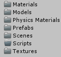

HTC Vive Tutorial for Unity


The HTC Vive is a virtual reality headset developed by HTC and Valve Corporation. It lets you step into virtual worlds and experience it as yourself, instead of through an on-screen avatar.
If you are a Unity developer, making virtual reality games with the HTC Vive into your own games is easy — you might even say the HTC Vive and Unity are a match made in heaven.
In this HTC Vive Tutorial, you’ll learn how to integrate the HTC Vive into your own Unity games. Specifically, you’ll learn how to:
- Download and configure SteamVR
- Handle the controller’s input
- Interact with physics objects in VR
- Make a laser pointer
- Teleport around an area
At the end of this HTC Vive tutorial, you’ll have a nice little sandbox that’s primed for further experimentation. Let’s get started!
Getting Started
Before you delve into this tutorial, make sure you’ve got the following:
- A VR-ready Windows PC.
- A copy of Unity 5.5 or newer installed on your machine.
- An HTC Vive with all hardware installed and the software configured and updated.
- Steam and SteamVR installed. See this guide, which will walk you through hardware set up and provide links to download Steam and SteamVR.
- Knowledge of the basics of Unity: Introduction to Unity: Getting Started.
- A basic understanding of scripting: Introduction To Unity Scripting.
Make sure that HTC Vive is powered on and connected!
Download the starter project, unzip it somewhere and open the folder inside Unity. Take a look at the folders in the Project window:

Each folder serves as home base for specific assets:
- Materials: Materials used for the scene including the blue bouncy balls
- Models: All the models
- Physics Materials: Bouncy ball physics material
- Prefabs: Loose object prefabs
- Scenes: The game scene is in here
- Scripts: All the scripts
- Textures: The single texture shared by all objects in the scene
Look at the scene view and press the play button to give the “game” a try:

At the moment, not much is happening because there’s no VR rig in the scene yet. You’ll need to add SteamVR to the project to connect the Vive to Unity.
Before setting up SteamVR, expand Level in the Hierarchy and select Floor. Set its layer to CanTeleport, it’s already selected but Unity 5.6 changed the way layers work which is why this needs to be set again for everything to work correctly.
Setting Up SteamVR
SteamVR SDK is an official library made by Valve that makes it easier to develop for the Vive. It’s currently free on the Asset Store and supports the Oculus Rift and the HTC Vive.
Open the Asset Store by selecting Window > Asset Store in the top bar:
Once the store loads, type SteamVR in the search field at the top and press Enter. Scroll down a bit to see a selection of assets. Click SteamVR Plugin to open its store page:
Click the Download button and give it a moment. Once it’s done, you’ll see the package import dialog. Click Import at the bottom-right corner to import the package:
At the end of the import, you may see the following message:

Click the button that says I Made a Backup to let the editor recompile the scripts. You’ll get this window after a few seconds:

This is a part of the SteamVR plugin. It shows which editor settings can be improved to maximize performance and compatibility.
When you open a fresh project and import SteamVR, you’ll see quite a few entries. Since the starter project is already well optimized, the only recommendation here is to disable the resolution dialog.
Click the Accept All button to perform all the recommended changes. Close the Asset Store and switch back to the Scene view. You’ll now have a new folder named SteamVR in your Project window:

Open the folder and look at the folders inside. You’ll add VR GameObjects from the Prefabs folder to the scene.
Select both [CameraRig] and [SteamVR] and drag them to the Hierarchy window:
[SteamVR] handles a few things. It automatically pauses the game when a player opens the system menu and syncs the physics update rate with that of the rendering system. It also handles smoothing of room-scale VR movement.
Review the properties in the Inspector panel:
[CameraRig] is more interesting because it controls the Vive’s headset and controllers. Select [CameraRig] and in the Inspector panel set its Position at (X:0, Y:0, Z:-1.1) to slide the whole rig just behind the table.
Delete the Main Camera from the Hierarchy because it’ll interfere with the [CameraRig] and its embedded camera.
Turn on the controllers and start the scene. Take both controllers and swing them around a bit. You’ll notice that you actually see the virtual controllers waving around in the Scene view:

Once the SteamVR plugin detects the controllers, it creates these virtual versions. The controllers are mapped to the two Controller children of [CameraRig]:
Now — while still running the scene — select Camera(eye) in the Hierarchy and carefully pick up your head-mounted display by the top strap. Move and rotate it a bit and watch the Scene view:

The camera is linked to the head-mounted display and precisely tracks every movement.
With Camera (eye) still selected, add a Steam VR_Update Poses component to it. This fixes a bug introduced in Unity 5.6 where the controller wouldn’t be tracked.
Now put the head-mounted display on your head, grab the controllers and look and walk around a bit to get a feel for the room.
You’ll be disappointed if you try interacting with the objects — nothing happens. To add functionality beyond movement tracking, you’ll need to do some scripting.
Handling Input
Take one of the controllers in your hand and give it a proper look. Each controller has the following inputs:

The touchpad acts as a button and an analog “joystick”. The controller also has a velocity and rotational velocity as you move and rotate it; this will prove especially handy when interacting with physics objects.
Time for some code! Create a new C# script in the Scripts folder, name it ViveControllerInputTest and open it in your favorite code editor.
Remove the Start() method and add the following right above the Update() method:
// 1
private SteamVR_TrackedObject trackedObj;
// 2
private SteamVR_Controller.Device Controller
{
get { return SteamVR_Controller.Input((int)trackedObj.index); }
}
In here, you’ve made:
- A reference to the object being tracked. In this case, a controller.
- A
Deviceproperty to provide easy access to the controller. It uses the tracked object’s index to return the controller’s input.
Both the head-mounted display and the controllers are tracked objects — their movement and rotation in the real world are tracked by the HTC Vive base stations and sent to the virtual world.
Now add the following method right above Update():
void Awake()
{
trackedObj = GetComponent<SteamVR_TrackedObject>();
}
Once this script is loaded, the trackedObj gets a reference to the SteamVR_TrackedObject component that’s attached to the controllers:

Now that you have controller access, you can easily read out the input. Add the following inside the Update() method:
// 1
if (Controller.GetAxis() != Vector2.zero)
{
Debug.Log(gameObject.name + Controller.GetAxis());
}
// 2
if (Controller.GetHairTriggerDown())
{
Debug.Log(gameObject.name + " Trigger Press");
}
// 3
if (Controller.GetHairTriggerUp())
{
Debug.Log(gameObject.name + " Trigger Release");
}
// 4
if (Controller.GetPressDown(SteamVR_Controller.ButtonMask.Grip))
{
Debug.Log(gameObject.name + " Grip Press");
}
// 5
if (Controller.GetPressUp(SteamVR_Controller.ButtonMask.Grip))
{
Debug.Log(gameObject.name + " Grip Release");
}
The code above covers most ways you can access the player’s input while they are in VR. It writes the name of the GameObject to the Console to easily differentiate between the left and right controller. Here’s a section-by-section breakdown:
- Get the position of the finger when it’s on the touchpad and write it to the Console.
- When you squeeze the hair trigger, this line writes to the Console. The hair trigger has special methods to check whether it is pressed or not:
GetHairTrigger(),GetHairTriggerDown()andGetHairTriggerUp() - If you release the hair trigger, this
ifstatement writes to the Console. - If you press a grip button, this section writes to the Console. Using the
GetPressDown()method is the standard method to check if a button was pressed. - When you release one of the grip buttons, this writes that action to the Console. Using the
GetPressUp()method is the standard way to check if a button was released.
The script is now ready to be tested. Save it and return to the Unity editor.
Select both controllers in the Hierarchy and add the ViveControllerInputTest component to them by dragging the script you just made to the Inspector:
Run the game again, take both controllers in your hands and look at the Console line at the bottom of the screen:

Press buttons, squeeze the trigger and move around on the touchpads. You’ll see the console is busy because each action is registered:
That’s it for basic input config. Now you have the power to manipulate the virtual world at your fingertips — literally!
Using The Controllers With Physics Objects
VR affords users many opportunities that are not possible in the “real world”, including picking objects up, examining them and throwing them around without having to clean up afterward.
HTC Vive lets you create this carefree virtual experience by employing some trigger colliders and doing a bit of scripting.
Select both controllers in the Hierarchy and add a Rigidbody component to them. (Add Component > Physics > Rigidbody)
Check the Is Kinematic checkbox and uncheck Use Gravity:

Add a Box Collider (Add Component > Physics > Box Collider) to both controllers and check Is Trigger.
The default collider is huge, so you’ll need to resize and reposition it. Set Center to (X:0, Y:-0.04, Z:0.02) and Size to (X:0.14, Y:0.07, Z:0.05). In this case, you require these kinds of precise values because even a hundredth of a unit affects where the collider ends up.

Run the game again. Select a controller in the Hierarchy and pick up the real controller. Look at the Scene view and focus on the controller you’re holding (press F). The collider goes right over the top part of the controller, which is the part you use to pick up objects.
Without a script, this collider is little more than a useless cube — create a new C# script in the Scripts folder, name it ControllerGrabObject and open it.
Remove the Start() method and add this familiar code in its place:
private SteamVR_TrackedObject trackedObj;
private SteamVR_Controller.Device Controller
{
get { return SteamVR_Controller.Input((int)trackedObj.index); }
}
void Awake()
{
trackedObj = GetComponent<SteamVR_TrackedObject>();
}
This is exactly the same code you used for the input test script. It gets the controller and stores a reference to it for later use.
Add these variables just beneath trackedObj :
// 1
private GameObject collidingObject;
// 2
private GameObject objectInHand;
Each variable has a purpose:
- Stores the GameObject that the trigger is currently colliding with, so you have the ability to grab the object.
- Serves as a reference to the GameObject that the player is currently grabbing.
Add this underneath the Awake() method:
private void SetCollidingObject(Collider col)
{
// 1
if (collidingObject || !col.GetComponent<Rigidbody>())
{
return;
}
// 2
collidingObject = col.gameObject;
}
This method accepts a collider as a parameter and uses its GameObject as the collidingObject for grabbing and releasing. Moreover, it:
- Doesn’t make the GameObject a potential grab target if the player is already holding something or the object has no rigidbody.
- Assigns the object as a potential grab target.
Now add these trigger methods:
// 1
public void OnTriggerEnter(Collider other)
{
SetCollidingObject(other);
}
// 2
public void OnTriggerStay(Collider other)
{
SetCollidingObject(other);
}
// 3
public void OnTriggerExit(Collider other)
{
if (!collidingObject)
{
return;
}
collidingObject = null;
}
These methods handle what should happen when the trigger collider enters and exits another collider.
- When the trigger collider enters another, this sets up the other collider as a potential grab target.
- Similar to section one (// 1), but different because it ensures that the target is set when the player holds a controller over an object for a while. Without this, the collision may fail or become buggy.
- When the collider exits an object, abandoning an ungrabbed target, this code removes its target by setting it to
null.
Next you’ll add code to grab an object:
private void GrabObject()
{
// 1
objectInHand = collidingObject;
collidingObject = null;
// 2
var joint = AddFixedJoint();
joint.connectedBody = objectInHand.GetComponent<Rigidbody>();
}
// 3
private FixedJoint AddFixedJoint()
{
FixedJoint fx = gameObject.AddComponent<FixedJoint>();
fx.breakForce = 20000;
fx.breakTorque = 20000;
return fx;
}
In here, you:
- Move the GameObject inside the player’s hand and remove it from the
collidingObjectvariable. - Add a new joint that connects the controller to the object using the
AddFixedJoint()method below. - Make a new fixed joint, add it to the controller, and then set it up so it doesn’t break easily. Finally, you return it.
What can be grabbed must be released. This next block handles releasing the object:
private void ReleaseObject()
{
// 1
if (GetComponent<FixedJoint>())
{
// 2
GetComponent<FixedJoint>().connectedBody = null;
Destroy(GetComponent<FixedJoint>());
// 3
objectInHand.GetComponent<Rigidbody>().velocity = Controller.velocity;
objectInHand.GetComponent<Rigidbody>().angularVelocity = Controller.angularVelocity;
}
// 4
objectInHand = null;
}
This code removes the grabbed object’s fixed joint and controls its speed and rotation when the player tosses it away. The controller’s velocity is key here. Without using it, the discarded object would drop straight down no matter how perfect your throw might be. Trust me, it doesn’t feel right. :]
Section-by-section breakdown:
- Make sure there’s a fixed joint attached to the controller.
- Remove the connection to the object held by the joint and destroy the joint.
- Add the speed and rotation of the controller when the player releases the object, so the result is a realistic arc.
- Remove the reference to the formerly attached object.
Finally, add this inside Update() to handle the controller input:
// 1
if (Controller.GetHairTriggerDown())
{
if (collidingObject)
{
GrabObject();
}
}
// 2
if (Controller.GetHairTriggerUp())
{
if (objectInHand)
{
ReleaseObject();
}
}
- When the player squeezes the trigger and there’s a potential grab target, this grabs it.
- If the player releases the trigger and there’s an object attached to the controller, this releases it.
I bet you can’t wait to try this out! Save the script and return to the editor.
Select both controllers in the Hierarchy and drag your new script onto the Inspector to make it into a component.

Time to have some fun! Get your controllers ready, start the game and put on the headset. Pick up and toss around some cubes and balls using the hair trigger. You can even juggle with a bit of practice.

You have to hand it to yourself — you’re pretty awesome right now. But I think you can make your VR experience even cooler!
Making A Laser Pointer
A laser pointer is handy in a VR world for all sorts of reasons. You can use them to pop virtual balloons, aim guns better and frustrate digital kittens.
Making one is quite simple. You’ll just need a cube and another script. Start off by creating a new Cube in the Hierarchy (Create > 3D Object > Cube).
Name it Laser, set its position to (X:0, Y:5, Z:0), change the scale to (X:0.005, Y:0.005, Z:0) and remove the Box Collider component. Focus on it and you should see it floating above the rest of the level:

Lasers shouldn’t cast shadows, and they’re always the same color, so you can get the desired effect by using an unlit material.
Create a new material in the Materials folder and name it Laser, and then change its shader to Unlit/Color and set its Main Color to pure red:

Assign the new material by dragging it onto the Laser in the Scene view. Alternatively, you can drag it onto the laser in the Hierarchy.

Finally, drag the Laser to the Prefabs folder and delete the original one from the Hierarchy.

Now make a new C# script named LaserPointer in the Scripts folder and open it. Add this familiar helper code:
private SteamVR_TrackedObject trackedObj;
private SteamVR_Controller.Device Controller
{
get { return SteamVR_Controller.Input((int)trackedObj.index); }
}
void Awake()
{
trackedObj = GetComponent<SteamVR_TrackedObject>();
}
Add these variables underneath trackedObj:
// 1
public GameObject laserPrefab;
// 2
private GameObject laser;
// 3
private Transform laserTransform;
// 4
private Vector3 hitPoint;
- This is a reference to the Laser’s prefab.
laserstores a reference to an instance of the laser.- The transform component is stored for ease of use.
- This is the position where the laser hits.
Add this method to show the laser:
private void ShowLaser(RaycastHit hit)
{
// 1
laser.SetActive(true);
// 2
laserTransform.position = Vector3.Lerp(trackedObj.transform.position, hitPoint, .5f);
// 3
laserTransform.LookAt(hitPoint);
// 4
laserTransform.localScale = new Vector3(laserTransform.localScale.x, laserTransform.localScale.y,
hit.distance);
}
This method takes a RaycastHit as a parameter because it contains the position of the hit and the distance it traveled.
Stepping through each section:
- Show the laser.
- Position the laser between the controller and the point where the raycast hits. You use
Lerpbecause you can give it two positions and the percent it should travel. If you pass it 0.5f, which is 50%, it returns the precise middle point. - Point the laser at the position where the raycast hit.
- Scale the laser so it fits perfectly between the two positions.
Add the following inside the Update() method to make use of the player’s input:
// 1
if (Controller.GetPress(SteamVR_Controller.ButtonMask.Touchpad))
{
RaycastHit hit;
// 2
if (Physics.Raycast(trackedObj.transform.position, transform.forward, out hit, 100))
{
hitPoint = hit.point;
ShowLaser(hit);
}
}
else // 3
{
laser.SetActive(false);
}
- If the touchpad is held down…
- Shoot a ray from the controller. If it hits something, make it store the point where it hit and show the laser.
- Hide the laser when the player released the touchpad.
Add the following inside of the empty Start() method:
// 1
laser = Instantiate(laserPrefab);
// 2
laserTransform = laser.transform;
- Spawn a new laser and save a reference to it in
laser. - Store the laser’s transform component.
Save this script and return to the editor. Select both controllers in the Hierarchy and drag the laser script onto the Inspector to make it into a component.

Now drag the Laser prefab from the Prefabs folder onto the Laser slot in the Inspector:

Save your project and give the game another run. Pick up a controller, put on the headset and try holding the touchpad. You’ll see a laser now:

Before moving on, remove the input test components from the controllers by right-clicking them and selecting Remove Component.
You’re removing them because they write strings for every frame and log them to the Console. It’s not a great thing for performance, and every millisecond counts in VR. They were handy for testing the input, but should not be used for actual gameplay.
The next step is using this laser to teleport around the room!
Moving Around
Moving around in VR isn’t as simple as pushing the player forward; doing so is a sure-fire way to induce nausea. A more feasible way to get around is teleportation.
The player’s sense of perception will accept a sudden position change more readily than a gradual one. Subtle changes in a VR setting can upset your feeling of balance and velocity more than suddenly finding yourself in a new place.
To show exactly where you’ll end up, you’ll use a marker or reticle that’s provided in the Prefabs folder.
The reticle is a simple, unlit, circular disk:
To use the reticle, you’ll append the LaserPointer script, so open it in a code editor and add these variables to the top of the class:
// 1
public Transform cameraRigTransform;
// 2
public GameObject teleportReticlePrefab;
// 3
private GameObject reticle;
// 4
private Transform teleportReticleTransform;
// 5
public Transform headTransform;
// 6
public Vector3 teleportReticleOffset;
// 7
public LayerMask teleportMask;
// 8
private bool shouldTeleport;
Each variable plays a role:
- Is the transform of [CameraRig].
- Stores a reference to the teleport reticle prefab.
- A reference to an instance of the reticle.
- Stores a reference to the teleport reticle transform for ease of use.
- Stores a reference to the player’s head (the camera).
- Is the reticle offset from the floor, so there’s no “Z-fighting” with other surfaces.
- Is a layer mask to filter the areas on which teleports are allowed.
- Is set to
truewhen a valid teleport location is found.
In the Update() method, replace this line:
if (Physics.Raycast(trackedObj.transform.position, transform.forward, out hit, 100))
With this one that takes the layer mask into account:
if (Physics.Raycast(trackedObj.transform.position, transform.forward, out hit, 100, teleportMask))
This makes sure the laser can only hit GameObjects that you can teleport to.
Also in the Update() method, add this code underneath the call to ShowLaser():
// 1
reticle.SetActive(true);
// 2
teleportReticleTransform.position = hitPoint + teleportReticleOffset;
// 3
shouldTeleport = true;
Here’s what this does:
- Show the teleport reticle.
- Move the reticle to where the raycast hit with the addition of an offset to avoid Z-fighting.
- Set
shouldTeleportto true to indicate the script found a valid position for teleporting.
While still in the Update() method, find laser.SetActive(false); and add the following line underneath it:
reticle.SetActive(false);
This hides the reticle in the absence of a valid target.
Add the following method to handle the act of teleporting:
private void Teleport()
{
// 1
shouldTeleport = false;
// 2
reticle.SetActive(false);
// 3
Vector3 difference = cameraRigTransform.position - headTransform.position;
// 4
difference.y = 0;
// 5
cameraRigTransform.position = hitPoint + difference;
}
Who knew teleporting is as simple as five lines? Let’s step through that code:
- Set the
shouldTeleportflag to false when teleportation is in progress. - Hide the reticle.
- Calculate the difference between the positions of the camera rig’s center and the player’s head.
- Reset the y-position for the above difference to 0, because the calculation doesn’t consider the vertical position of the player’s head.
- Move the camera rig to the position of the hit point and add the calculated difference. Without the difference, the player would teleport to an incorrect location. See the example below:
As you can see, the difference plays a crucial role in precisely positioning the camera rig and putting the player exactly where they expect to land.
Add this at the end of Update(), just outside the touchpad press if-else statement:
if (Controller.GetPressUp(SteamVR_Controller.ButtonMask.Touchpad) && shouldTeleport)
{
Teleport();
}
This teleports the player if the touchpad is released and there’s a valid teleport position.
Finally, add this code to the Start() method:
// 1
reticle = Instantiate(teleportReticlePrefab);
// 2
teleportReticleTransform = reticle.transform;
- Spawn a new reticle and save a reference to it in
reticle. - Store the reticle’s transform component.
That’s it! Save your script and return to Unity.
Select both controllers in the Hierarchy and take note of the new fields:
Drag [CameraRig] to the Camera Rig Transform slot, drag TeleportReticle from the Prefabs folder to the Teleport Reticle Transform slot and drag Camera (head) to the Head Transform slot.

Now set the Teleport Reticle Offset to (X:0, Y:0.05, Z:0) and set the Teleport Mask to CanTeleport. CanTeleport is not a default layer — it was created for this tutorial. The Floor and Table objects are the only ones that are part of this layer.
Now play the game and use your laser on the floor to teleport around the room.

This sandbox is now fully functional and ready for endless tinkering!
Where To Go From Here?
You can download the complete project here. In this HTC Vive tutorial for Unity, you learned how to:
- Download and configure SteamVR.
- Handle the HTC Vive controller input.
- Interact with physics objects in VR.
- Make a laser pointer.
- Teleport around an area.
This project is just the beginning — make it your own! I’m curious to see what you all come up with.
If you’re enjoyed this tutorial want to learn more, you should definitely check out our book Unity Games by Tutorials, which has more info on making VR games with Unity, including support for the Oculus Rift.
The easiest way to understand what’s in the book is to watch the trailer:
Thanks for reading, I hope you enjoyed following along with this tutorial as much as I did writing it!
If you have any suggestions, questions or if you want to show off what you did to improve this project, join the discussion below.

Team
Each tutorial at www.raywenderlich.com is created by a team of dedicated developers so that it meets our high quality standards. The team members who worked on this tutorial are:
-
 Author
Author
Eric Van de Kerckhove -
 Tech Editor
Tech Editor
Mitch Allen -
 Editor
Editor
Wendy Lincoln -
 Final Pass Editor
Final Pass Editor
Ray Wenderlich - Team Lead
Eric Van de Kerckhove